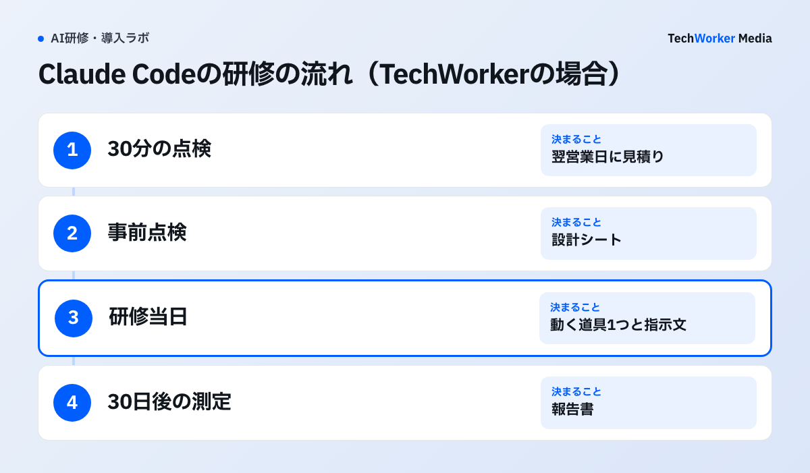
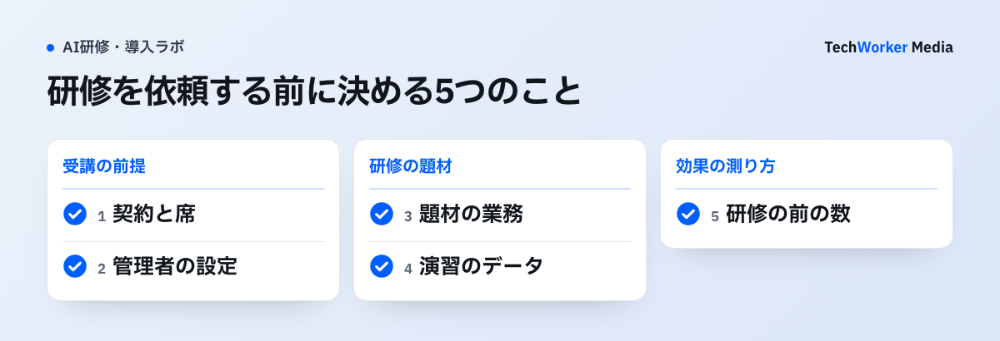

Claude Codeの法人研修は、コードを書かない部署でも受けられます。依頼する前に、受講者の契約と管理者の設定、題材にする業務を決めておくと、研修の1日を道具づくりに使えます。
- 対象者：文書やExcelの作業が多い部署と、設定を配る情報システムの担当者です。
- 内容：安全な設定、文章で指示して業務の道具を作る演習、社内展開と利用額の見方の3つが軸です。
- 日数と費用：TechWorkerの研修は1製品で1日（6時間）、1回30名までです。費用は研修の一式と、受講者が使うClaudeの席（Teamの標準席は1人月20ドル・年払い）に分けて組みます。
この記事では、Claude Codeの公式ドキュメント、Claudeの料金ページ、厚生労働省の資料を2026年11月12日に確認しました。そのうえで、TechWorkerの研修の組み方をもとに、対象者・内容・日数・費用の決め方と、依頼前に決める5つのことをまとめます。
Claude Codeの法人研修では、何を身につけますか？
身につけるのは、会社の決めた設定の中で、文章の指示から業務の道具を作って使い続ける力です。
Claude Codeは、利用者のPCでファイルを読み、書き、コマンドを動かせます。そのため会社で使うときは、管理者が設定を配り、利用者が上書きできないようにします。公式ドキュメントは、この「管理者の設定」を次のように説明しています。
原文“Nothing in your own settings files or
--settingsoverrides a managed key, and a flag such as--modelpicks only from the models your organization allows.”日本語訳自分の設定ファイルや
--settingsの指定では、管理者の設定の項目を上書きできません。--modelなどの指定も、組織が許可したモデルの中からしか選べません。
引用は、設定の優先順位を説明する節の一部です。管理者の設定は、claude.aiの管理画面から配る方法と、PCに設定ファイルを置く方法があります。利用者は /status で、どの管理者の設定が効いているかを確かめられます。
この引用から分かるのは、設定の強さの順番までです。どの操作を許し、どのファイルを読ませないかは、会社ごとに決めます。研修では、受講者が決められた設定の中で作業できることを、実際の画面で確かめます。設定を配る手順そのものはClaude Codeの社内展開で説明しています。
誰が受けるとよいですか？
文書やExcelの作業が多い部署の担当者と、設定を配る情報システムの担当者です。コードを書く経験は要りません。
- 文書・Excelの作業が多い部署：経理、人事、営業事務、法務などです。手元のExcelと文書を読み、整えて、下書きを作る作業が題材になります。
- 情報システムの担当者：許可する操作、読ませないファイル、使えるモデルを決め、配ります。研修で受講者がつまずく所を見ておくと、設定の直し方が分かります。
- 受講者の上長：研修で作った道具を、翌日から業務で使ってよいかを決めます。研修の当日でなくても、30日後の測定の前に結果を見てもらいます。
開発者だけの研修にすると、業務の道具を作る使い方が社内に広がりません。逆に、業務部門だけで受けると、設定の問い合わせに答える人がいません。業務部門の受講者と情報システムの担当者を、同じ回に入れるのが組みやすい形です。
研修の内容はどう組みますか？
全員で受ける共通編のあとに、Claude Code編の5つの単元を置き、最後に受講者の業務1本を道具にします。
TechWorkerの研修では、最初の60分を全員の共通編にしています。入れてよい情報の仕分け、出力の確かめ方、AIに任せる工程と人が確かめる所の分け方を扱います。そのあと、Claude Code編に進みます。
| 単元 | 中身 | 持ち帰るもの |
|---|---|---|
| セットアップとログイン | WindowsとMacで、会社のアカウントでログインする | 全員が同じ版で動く状態 |
| 安全な設定 | 権限、読み取りだけで始める、管理者の設定の強制、フック、罠の入った文書での確かめ方 | 権限の設定表と、効くことを確かめた記録 |
| 業務の道具を作る | 文章で指示して、Excel・文書の読み取り、整形、下書きを作る | 動く道具1つと、その指示文 |
| 社内展開とコスト管理 | Team・Enterprise・APIの違いと、利用額の見方 | 席の配り方と上限の案 |
| モデルの選び方 | Opus 5.5・Sonnet 5.5・Haiku 5.5の使い分け | 作業ごとのモデルの決め方 |
出典：TechWorker「研修の中身」のClaude Code編（2026年11月12日時点）。教材は公式の変更に合わせて毎週見直しています。
演習では、手元のExcelと文書を読んで下書きを作る小さな道具を作ります。同じ指示を保存して、翌日から使える形にして持ち帰ります。受講者は事前に、設計シートへ実際の業務を1つ書いてきます。
上位のモデルを選ぶ単元では、費用の差も扱います。たとえば2026年11月9日に出たClaude Fable 5.2は、Opus 5.5の2倍の単価です。誰に使わせるかはClaude Fable 5.2の料金と法人利用で整理しています。
日数と人数はどう決めますか？
1製品なら1日（6時間）、1回30名までを基準にし、助成金を使う場合は合計10時間以上になるよう回を分けます。

TechWorkerの研修は、1製品を1日で扱います。30名までにしているのは、操作演習で講師が一人ひとりの画面を見るためです。30名を超える場合や、複数の部署で題材が違う場合は、回を分けます。
人材開発支援助成金の事業展開等リスキリング支援コースを使う場合は、訓練の中身に注意します。厚生労働省は、2026年8月3日からの変更点で、助成の対象外になる訓練の例を挙げています。
原文（日本語）「生成AIを利用するために汎用的なプロンプトの作り方を学ぶ訓練」「特定の業務への具体的適用を伴わない汎用的内容であるため助成対象外」
同じ資料は、生成AIで商品提案書の構成案を作る営業担当者向けの訓練を、助成の対象の例に挙げています。業務に直結し、そのまま使える内容だからです。受講者の実際の業務を題材にするClaude Codeの研修は、この考え方に沿って組めます。
この引用で分かるのは、対象になる訓練の考え方までです。パンフレットには、10時間以上のOFF-JT（職場を離れて受ける訓練）などの条件も載っています。支給の可否は労働局が判断し、計画届は会社が出します。
費用はどう決まりますか？
研修の一式の費用と、受講者が使うClaudeの席の費用を分けて見積ります。
研修の費用：TechWorkerの研修は1名ごとの料金にしていません。30分の点検、事前点検、研修当日、30日後の測定と報告を一式で見積ります。30分の点検（無料）の翌営業日に、見積りを送ります。
Claudeの席の費用：Claude CodeはTeamとEnterpriseの有料の席に含まれます。料金ページの額は次のとおりです（2026年11月12日確認、米ドル、税別）。
- Teamの標準席は1人月20ドル、プレミアム席は月100ドルです（年払い）。2〜150人で契約できます。
- Enterpriseは1席月20ドル（年払い、最低20席）に、使った分のAPI料金が加わります。
30人がTeamの標準席で受講し、そのまま1年使うと、席の料金は年7,200ドルです（20ドル×30人×12か月）。Claude Codeを多く使う人だけをプレミアム席にすると、その人数×月80ドルが加わります。利用枠を超えた分は、管理者が使用量クレジットを有効にしたときだけ、API標準料金で払います。
Team・Enterprise・APIの選び方と、TechWorkerが実際に使った額はClaudeの法人契約と料金に載せています。
4社の料金比較表と稟議書の雛形は、下の枠から受け取れます。
依頼する前に何を決めますか？
契約と席、管理者の設定、題材の業務、演習のデータ、測る数の5つです。

- 契約と席：受講者全員に、TeamかEnterpriseの席か、APIキーを用意します。個人のアカウントで受けると、研修のあとに会社の設定へ移す手間が残ります。
- 管理者の設定：許可する操作、読ませないファイル、使えるモデルを決めます。研修の前に配っておくと、受講者は会社の設定のままで演習できます。
- 題材の業務：受講者1人ごとに、実際の業務を1つ決めます。毎週くり返す、Excelや文書を読んで整える作業が向いています。
- 演習のデータ：サンプルデータを基本にします。実データを使う場合は、誰の権限で読むかを先に決めます。
- 測る数：研修の前に、題材の業務の1件の時間と差し戻しの数を記録します。前の数がないと、30日後に比べられません。
外部の研修会社に依頼するときの比べ方は生成AI研修を外部委託するRFPでまとめています。
研修の効果はどう測りますか？
研修の30日後に、使った人の割合、1件の時間、差し戻しの数、直した穴の数の4つを測ります。
- 使った人の割合：設計シートに書いた業務で、AIを使った受講者の割合です。
- 1件の時間：題材の業務1件にかかる時間です。研修の前と比べます。
- 差し戻しの数：AIを使った成果物が、確認で戻された数です。
- 直した穴の数：研修の前の点検で見つけた設定の穴のうち、直した数です。
数と一緒に、続いている業務と止まった業務、その理由も書きます。止まった理由が設定にあるなら、管理者の設定を直します。研修の効果測定の組み方は生成AI研修の効果測定でも説明しています。
よくある失敗にはどんなものがありますか？
多いのは、契約や設定を研修の当日に決めること、題材を決めずに受けること、研修の前の数を取らないことの3つです。
- 研修の当日に、ログインとインストールで時間がなくなる。席の割り当てと版の確認を、研修の前に済ませます。
- 題材を決めずに受け、一般的な使い方の説明で終わる。持ち帰る道具がないと、翌週には使われなくなります。助成金の対象の考え方からも外れます。
- 管理者の設定を配らずに受け、あとで使えなくなる。研修で動いた操作が、設定を配ったあとに止まることがあります。先に設定を配ってから受けます。
- 研修の前の数を取らない。30日後に何が変わったかを示せず、次の部署に広げる稟議が通りにくくなります。
- 上位のモデルを既定にしたまま、全員に配る。単価の高いモデルを全員が使うと、席の料金とは別に利用額が増えます。研修で作業ごとのモデルを決めます。
よくある質問
受けられます。Claude Codeは文章で指示して道具を作る形で使えます。TechWorkerのClaude Code編も、コードを書く経験を前提にしていません。必要なのは、自分の業務の手順を書き出す作業です。
必要です。受講者1人ごとに、Claudeの法人契約（TeamかEnterprise）の席か、APIキーを用意します。Claude CodeはTeam・Enterpriseの有料の席に含まれています。
TechWorkerの研修は、1製品で1日（6時間）が基本です。最初の60分は全員が共通編を受け、そのあとClaude Code編に進みます。助成金を使う場合は、合計10時間以上になるよう回を分けます。
研修の費用と、受講者が使うClaudeの費用の2つに分けて考えます。TechWorkerの研修は、30分の点検から30日後の測定までの一式で見積ります。1名ごとの料金は設けていません。Claudeの費用は、Teamの標準席なら1人月20ドル（年払い）です。
事業展開等リスキリング支援コースは、業務に即した訓練が対象です。厚生労働省の案内では、汎用的なプロンプトの作り方を学ぶだけの訓練は2026年8月3日以降は対象外です。職場を離れて受ける訓練が10時間以上などの条件もあります。支給の可否は労働局が判断します。
次の一歩は何から始めればよいですか？
受講する部署と人数を決め、1人1つずつ題材の業務を書き出すことから始めます。
- 受講する部署と人数、Claudeの契約（TeamかEnterprise）を決めます。
- 受講者に、毎週くり返す業務を1つずつ書き出してもらい、1件の時間を記録します。
- 情報システムの担当者と、許可する操作と読ませないファイルを決めます。
TechWorkerでは、30分の点検（無料）で契約と設定の状態を確かめ、翌営業日に研修一式の見積りを送ります。検討段階のご相談だけでも歓迎です。
出典と確認範囲
確認日：2026年11月12日。料金と助成金の条件は変更されるため、申込みの時点で公式情報を確認してください。席の料金は米ドルで、税を含みません。研修の日数・人数・費用の決め方はTechWorkerの研修の場合で、ほかの研修会社の条件は含みません。助成金の支給の可否は労働局が判断します。